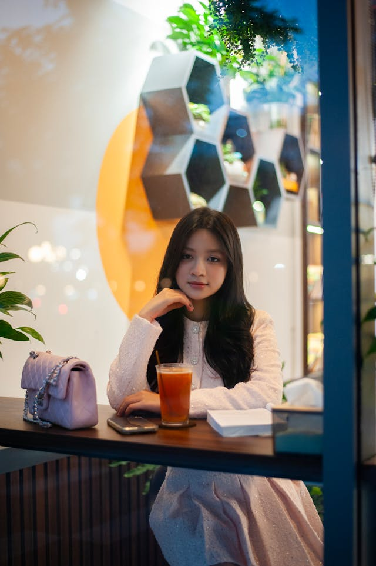
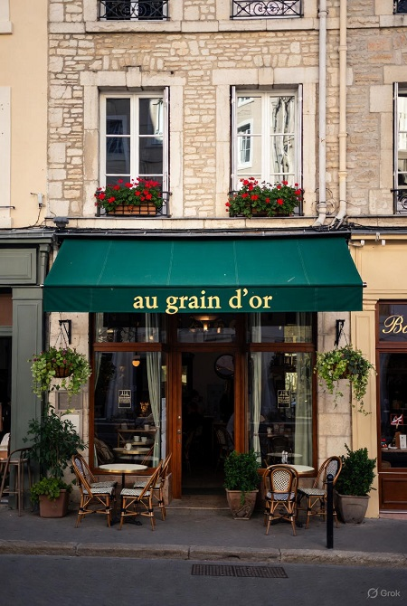
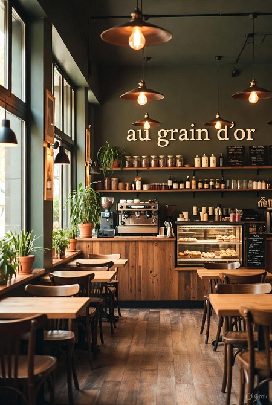

Le Grain d’Or
Le goût du café artisanal à Lyon
Nous travaillons sans relache pour proposer à notre clientèle des produits recherchés et qualitatifs
Voici donc un avant goût de ce que l'on vous propose.
Café du Brésil
2,50 €
Un café noir intense aux notes de cacao et de noisette, torréfié artisanalement pour un goût rond et équilibré. Idéal pour les amateurs de café corsé au réveil.
Espresso Maison
2,00 €
Notre espresso signature, préparé avec un mélange unique de grains soigneusement sélectionnés. Court, puissant et plein de caractère, il est le cœur du Grain d’Or.
Cappuccino
3,50 €
Un mélange parfait d’espresso, de lait chaud et d’une mousse onctueuse. Léger, crémeux et réconfortant, il accompagne à merveille une pause gourmande.
Latte Vanille
4,00 €
Une boisson douce et parfumée à la vanille, avec un espresso velouté et une mousse de lait généreuse. Une touche sucrée pour un moment de détente tout en douceur.

Passionnée par l’univers du café
depuis son plus jeune âge
Marcelle Dupont a fondé Le Grain d’Or
en 2015 avec une idée simple :
redonner au café toute sa noblesse et sa convivialité.
Originaire de Lyon, elle a voyagé au Brésil
en Colombie et en Éthiopie
pour découvrir les secrets de la torréfaction artisanale
et rencontrer les producteurs locaux.
Aujourd’hui
elle met tout son savoir-faire au service d’un café authentique
éthique et plein de caractère.
Chaque tasse servie au Grain d’Or
reflète son exigence de qualité
sa curiosité du goût et sa passion pour le partage.
Chez Le Grain d’Or, la torréfaction est bien plus qu’une simple étape
c’est un véritable rituel.
Nos grains, rigoureusement sélectionnés auprès de producteurs passionnés
sont torréfiés lentement afin de préserver toutes leurs nuances aromatiques.
Cette méthode artisanale permet de révéler la richesse du café
sans jamais le brûler
pour un goût à la fois intense et équilibré.
Découvrez dans cette courte vidéo les secrets de notre savoir-faire
et la passion qui anime chaque torréfaction.

| Lundi | 08:00 - 17:00 |
| Mardi | 08:00 - 17:00 |
| Mercredi | 08:00 - 17:00 |
| Jeudi | 08:00 - 17:00 |
| Vendredi | 08:00 - 17:00 |
| Samedi | 08:00 - 17:00 |
| Dimanche | 08:00 - 12:00 |
